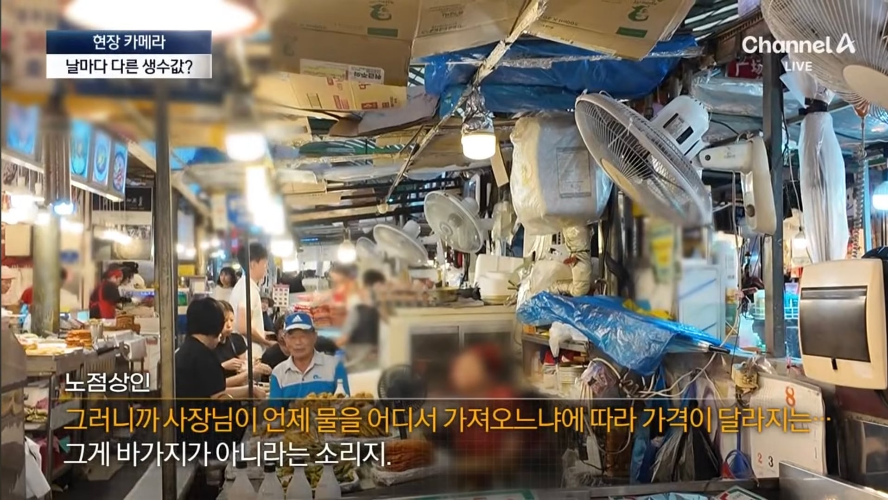
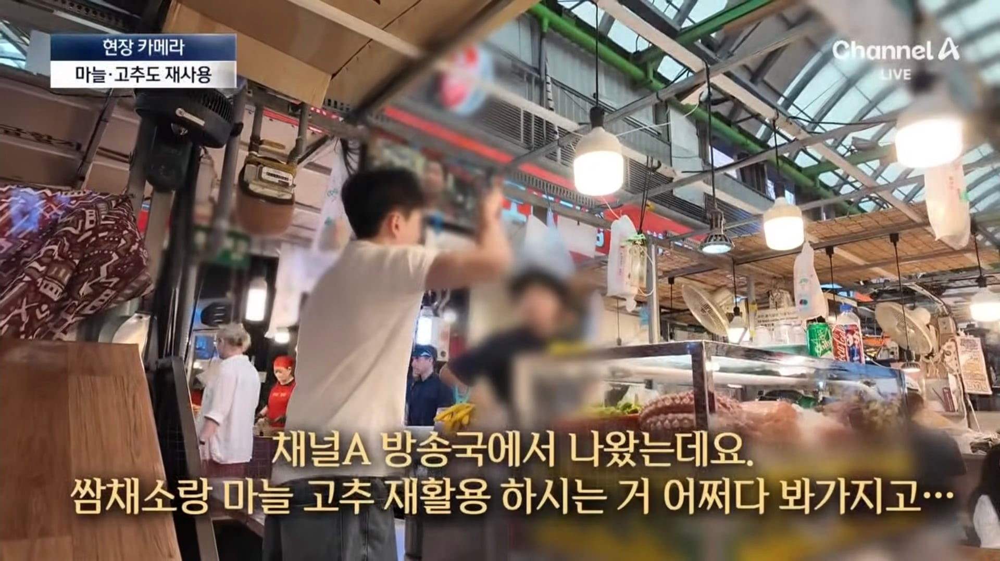
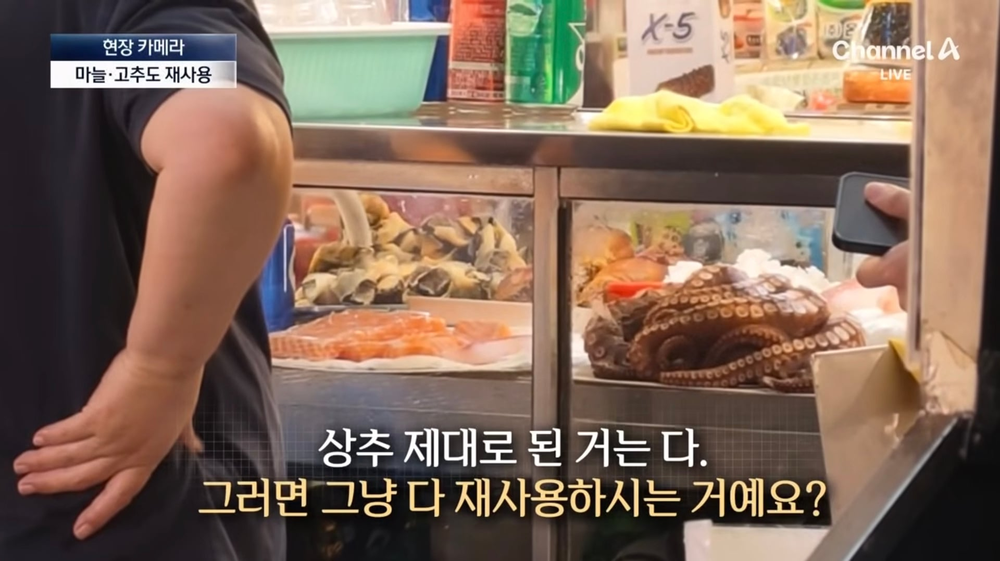
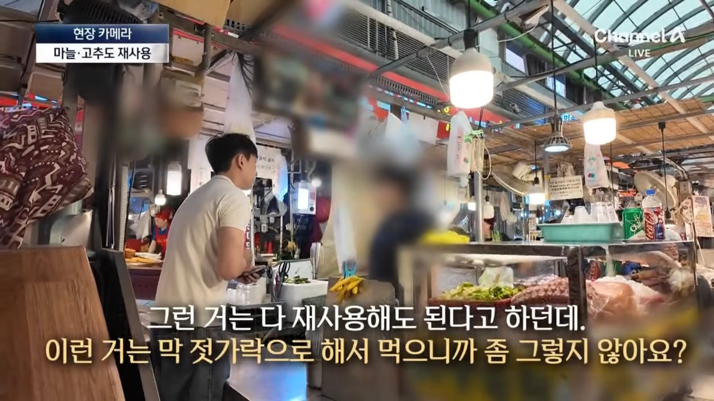
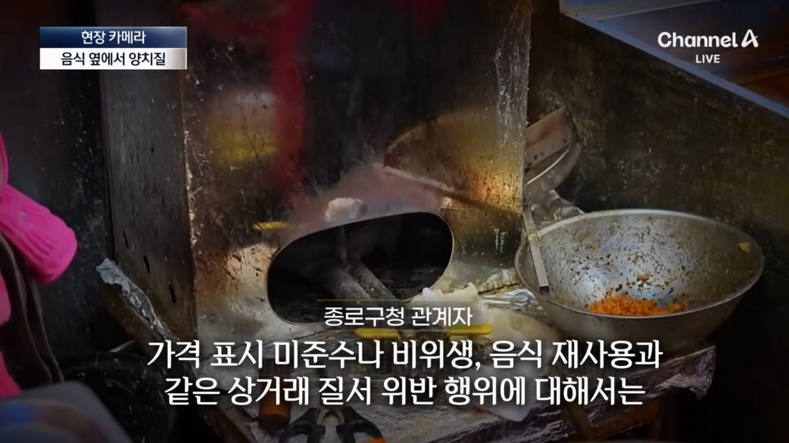
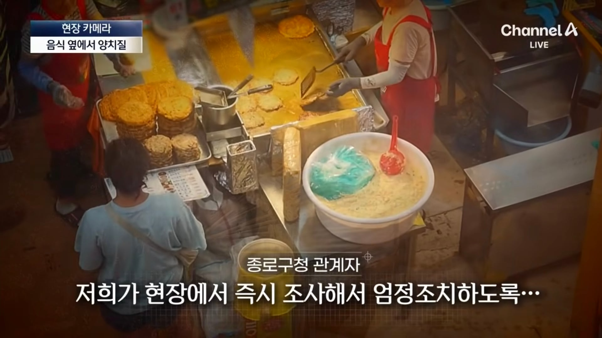

사기쳐 놓고 당당한 쌍년



그나마 잘못 했다고는 하는데 진짜 재활용 안할까?


안바뀜 바가지 비위생 논란 여전
벌점 주며 단속 하겠다던 종로구 단속 안함
단속 받은 점포가 아예 없슴
상인들과 종로구는 쌍으로 거짓말함

사기쳐 놓고 당당한 쌍년



그나마 잘못 했다고는 하는데 진짜 재활용 안할까?


안바뀜 바가지 비위생 논란 여전
벌점 주며 단속 하겠다던 종로구 단속 안함
단속 받은 점포가 아예 없슴
상인들과 종로구는 쌍으로 거짓말함
저 상인들이 신체가 없으면 영체만 있음?
'신체'가 본래 '사람의 몸'을 뜻함 그래서 원칙적으로는 동물에게 신체라는 단어를 사용하지 않음
단어에 꽂힌다는건 이런거군
시장에 불한번 크게나서 그자리에 아파트나 짓는게 답
60대 할매할배들이 잘도 바뀌겄다 ㅋㅋㅋ
한평생 저리 살아왔는데
그래서 곱게 멀쩡한 정신으로 늙어야함
저때는 고칠수가 없음
좀 가지말지 망해야 정신 차리는데
누가 자꾸가냐
외국인들 존나가더라
상인놈들도 어차피 한번보고말사이라 생각하고 걍 무대뽀로 가고
분신이나 하지
택시 기사들은 진짜 분신 하던데
저긴 존나 먹고 살만해서 절대안할듯
공무원도 예예 단속 할게요~하고 나가보지도 않넼ㅋㅋㅋㅋ
전문직보다더벌수도있어
걍 시장은 포기하고 그냥 외국인 등쳐먹는 하나의 문화로 받아들이자
우리나라 수준엔 그게 맞음
어차피 올놈들은 오니깐 ㅋㅋㅋㅋㅋ
절대 안망해 늘 사람 바글바글하더만
난 내가 비정상이라고 생각하고 안갈란다
분:식집에서 시작된
골:수 악덕상인들이
쇄:신을 하겠다하네
신: 갈 ic
단속 안함?
개같은것들 싹 망하고 대형마트로 가야된다
제발 좀 가지마
사기죄로 못잡아가냐 대놓고 사기쳐서 금전적이익 뜯는데
나도 쌈채소는 재활용 가능하다고 알고있음
세척 후 재활용 가능
아니 그니까 왜 가냐고
가주는 새끼들이 있으니까 계속 저지랄하는거지
그냥...마트가 편해 적혀있는 가격 그대로만 받거든
진짜 안바뀌네
공무원 일하게 할려면 신고하고 나서 단속 결과 알려달라하고 죽치고 앉아서 오나 안오나 감시하고 일정 기간 내로 안오면 민원 존나 박고 그거 반복해야 하는데
그렇게 희생하실분이 없음
공무원 철밥통질 졷됨
그럼그렇지 시발
나는 진짜 이런거보면 사회에 저능아들이 진짜 많은거같아
누가 문제 있다고 알려줘도 누가 협박이라도 했는지
기어코 쳐 가놓고 ㅠㅠ 이지랄하고있어
이거랑 비슷한예로는 전세도 있음
위험하다 했는데도 지들이 몇푼 아끼겠다고 갔으면
리스크도 생각해야지 내돈 이지랄하고 있으면 참 ㅋㅋ
심지어 그걸 남들 세금으로 매꾸고 있으니
사회에 저능아좀 많이 사라져야 될텐데 환장할 노릇이다
광장시장 상인회가 노점 상인회랑 점포 상인회로 갈려있다고함. 점포상인회는 통제가 되는데 노점은 지ㅈ대로 해서 매번 문제가 터진다고함. 광장시장 갈사람은 점포로 가시오
수요가있으니 변하지 않는것
시장가는게 문제여
수요가 있으니까 저러는거지. 가주는 새끼들도 공범임.
느그지갑이 분골된다고 ㅋㅋㅋ
좆같은새끼들
뭐 맨날 관리하겠다~ 조사하겠다~ 조치하겠다~ 말만 하고 아무것도 안하잖아ㅋㅋ 힘들고 귀찮은데 왜 함? 어차피 관광객들로 항상 넘쳐나는데ㅋㅋ
수산시장도 안 가니까 점점 좆되가는 게 보이는데 저기는 아직 멀었구만 ㅋㅋ
아니 가지 좀 말라고
난 절대 저기 포차에서 안먹음
난 의지없는 늙은이들이 존나게 싫음.
일 하는곳에서도 협력 업체에서 와서 일하는 나이든 사람 하나 있는데,
자꾸 눈치 살살 보면서 뭐 안하려고하고 수십번 알려줘도 아주 간단한거 조차 이해 하려고 들지도 않아서 존나 바쁠때마다 계속 도와줘야돼서 오히려 존나 방해됨.
그게 거의 1년째임 씨이이발.
심지어 걔가 뭐 확인 해야되는거 이메일로 보내준대도 '이메일'에서 '다운로드' 받는다는 개념을 이해를 못해서
"그냥 컴퓨터에서 클릭만 하면 되게 해달라" ㅇㅈㄹ 하고있음.
못하거나 힘든건 백번이고 천번이고 이해해 줄 수 있고 화도 안나고 배려도 해줄 수 있는데
씨발 의지도 없는 주제에 눈치 살살 보면서 아방한척 존나 하면서 약삭빠르게 행동하는 주제에
지금까지 해왔으면 5살 짜리도 알만한 일들을 중간중간 한번씩 지금에서야 뭐 깨달은것마냥 한마디씩 가르치려 드는게 아구창 돌려서 패죽이고 싶을때가 한번씩 있음.
그래서 저런 제대로 바뀔 의지없는 노인네들 보면 혐오감이 한도를 쉽게 넘겨버림.
믿을걸 믿어라
그걸 믿었음? 째트킥!!
소래포구도 그렇고 가지 말아야함
걍 안가서 망하게 해야함
그래야 정신차리지 ㅋㅋ
광장시장은 전라도횟집과 은성횟집 때문에 갔는데
전라도횟집은 모르겠으나 은성횟집 대구탕 퀄이 떨어진게 느껴지더라 특유의 냉동 대구의 퍽퍽함이 바로 느껴져서 이제 ㄹㅇ 갈 이유가 없어짐
더럽게 노점에서 왜 먹음?
왜 자꾸 처 가는거냐 ㅋㅋ 그렇게 가지말라고 가지말라고해도 아줌마아저씨들 존나감ㅋㅋㅋㅋㅋ
물이 천원에들어온다고??ㅋㅋㅋㅋ시발 말도안되는 개소릴 저리도 뻔뻔하게 하네 제일비싼 코카콜라도 1000원이하에일텐데 ㅋㅋㅋㅋㅋㅋㅋㅋㅋㅋㅋㅋㅋ
저런데 바꾸는건 분골쇄신, 자정작용 이딴게 아님
손님 발길이 끊겨야 바뀐다.
공유지의 비극
분골쇄신
벌레는 뼈가 없고 신체는 사람이 가지는 것이니
벌거지같은 것들이라 지킬 필요가 없는말